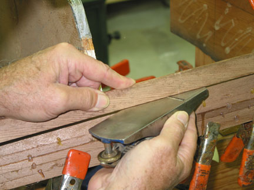

Shop Tips Continued
Hand Beveling Strips and Saw Set-up
Hand Beveling Strip Edges, instead of Bead and Cove
I believe you will work faster and be happier hand beveling the edges of your strips. I built my first two strippers this way and I've built my last ten this way.After years of working with bead and cove I switched back to hand beveling. The reason was, I kept having big glue lines appear after the surfaces were sanded because it is very hard to tell if the bead edges are totally seated in the cove. And if your cutters are not set PERFECTLY this problem will be worse! AND I'd be willing to bet 90% of all novice builders who use bead and cove do not set-up their cutters PERFECTLY!
B&C sounds great because the interlocking profiles allow you to go round curves, have maximum glue surface, and self aligning edges. In theory. B&C is supposed to be self aligning, but you'll get in trouble fast if you count on it and don't check, check, check, the alignment.
As an idea it's great. We all like those great ideas. This is great if you buy a kit. B&C is milled for you.
A novice will not know how much time and work it takes to make the B&C strips. Most novices will not even know what a correct alignment looks like!
You can waste A LOT of time fooling around with router set-up. SO much work/time is involved in the whole process of set-up, testing, swearing, set-up, testing, swearing, set-up, testing, swearing and milling, from start to finish. You cannot test the alignment properly unless you have two routers set-up to cut both profiles at the same time. How do you test to know when your B&C cutters are aligned perfectly? If you don't know you will create not solve problems.
The same time and energy spent on cutter set-up and milling bead and cove, would have your hull stripped by hand beveling the strips.
I'd suggest hand beveling the strips instead.
START BY, running one edge of each strip through the table saw and cutting a 3 degree bevel, and mark the edge with a pencil check, after you've cut your strips. This would be a large enough bevel to allow you to have tight strip joints on 90% of your boat without having to even hand bevel.
Update - 07/07/17 - Rounding the bildge of my latest kayaks I milled a 5˚ bevel on the opposite side of my previously milled strips which had a 3˚ bevel and needed nearly NO hand beveling!
THEN, on areas that need a larger bevel, usually around the bilge, just bevel one edge of each new strip with a SHARP block plane. It is quite easy if you clamp one end of the strip in place on the boat and work the other end, beveling and test fitting the edges as you work from the stem to the center of the boat.
The trick I've found to beveling strips is to keep 1/2 of each strip spring clamped in place from one stem and work on the bevel. This allows you to keep the strip under control while bending the strip in a convex arc, so the plane will move smoothly, taking down the edge.
This makes it easy to quickly put the strip in place to judge how well the bevel is working, without walking back and forth from a bench to bevel and test.
I loosely clamp each new strip to the previous one with four spring clamps. One at each stem and two straddling the middle. Remove and replace clamps as needed to make your bevel.
You will be making what is called a rolling bevel in that the angle and amount of the bevel will change from the stems (little or no bevel) to the center of the hull (the most bevel). In all cases your goal is to bevel just enough to make the outside edges of the strips contact in a tight joint.
Hold the block plane with the base up and plane away from your body, so you'll bevel the bottom INSIDE edge of the strip. Keep an eye on the exterior edge, which will be the visible part of the joint. You don't want your bevel to break this edge. Start with just a very slight angle, you will be surprised at how little a bevel you need.
Also, when you hold the strip off the hull it will not be perfectly straight and if you hold the sole of your plane parallel to the strip length the blade will not cut much or at all. However, if you hold the plane sole at an angle of 45° or more you will be able to engage the full blade cut in the bevel you are cutting.
Look at the gap you see on joint between the two strips. This is the amount of bevel you must make on the bottom, back edge of the new strip.
Hold your block plane against the bottom of the strip and make the same size gap. This amount of material to be removed when you are beveling the edge.
Bevel a section about two feet long and test the fit by holding the strip in place on the hull on top of the last strip on the boat.
Once you like the fit of one end of the strips, clamp that end of the strip in place on the hull and do the other end. You will find it easy and fast.
With hand beveled strips you must align strips between stations and use spring clamps to hold the edges in place. I use beads of hot glue to keep the strip edges aligned and in place until the glue sets, so I can remove the spring clamps and go on to the next strip. Pre-fit each strip and test clamp it in place, so you will have no surprises when you are ready to glue. Go over and over the strip edges to ensure they are aligned. If you come back later and find an edge out of alignment, cut on the joint with a new razor blade and re-align and re-glue the strip.